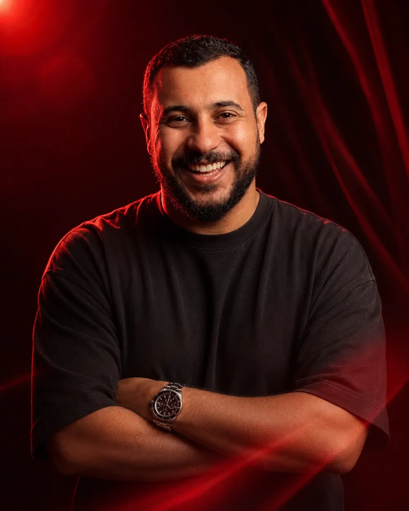

التصميم عندي بيبدأ من هنا
التصميم مش رسم جميل — التصميم هو حل مشكلة بصرية يحققلك هدفك، سواء كان مبيعات أو توعية.
أحمد أمين · مصمم جرافيك أول

كل مشروع، فولدر وحكاية.
افتح الفولدر، واكتشف الفكرة والتطبيقات. مشاريع في البراندنج والسوشيال والمطبوعات.
من فكرة في دماغك، لبراند قدّام الناس.
01هويات بصرية وبراندنج
BRAND IDENTITY+
هوية ليها منطق وشخصية: من الشعار والألوان والخطوط، لنظام بصري متكامل يشتغل على كل نقطة تواصل.
02تصميم السوشيال ميديا
SOCIAL & CAMPAIGNS+
اتجاه بصري ثابت، تصميم كالندر المحتوى، وحملات توصل رسالتك وتحافظ على شخصية البراند وسط الزحمة.
03كمبني بروفايل ومطبوعات
EDITORIAL & PRINT+
بروفايل يحكي شركتك بوضوح، عروض تقديمية ومطبوعات وتغليف، بعين فاهمة التصميم وتجهيز الملفات للإنتاج.
04استراتيجية ومحتوى
STRATEGY & WORDS+
نحدد الجمهور والرسالة واتجاه المحتوى، ونحوّلهم لخطة وكلام وتصميم بيخدموا نفس الهدف. نطاق الخدمة بيتحدد حسب احتياج المشروع.
INTENTION.
IDENTITY.
AHMAD AMEEN / أحمد أمين
بصمّم بعين فنان، وتفكير فاهم البيزنس.
أنا أحمد أمين، مصمم جرافيك أول في Novi Marketing، ومتاح للتعاون في مشاريع فريلانس. بدأت رحلتي مع الطباعة سنة 2015؛ وده علّمني أبص للتصميم من أول الفكرة لحد شكله في إيد العميل.
تركيزي على الهويات البصرية والسوشيال ميديا. بحب الشغل اللي يربط فكرة واضحة بتفاصيل متماسكة، ويخلّي البراند معروف حتى قبل ما تقرأ اسمه.
شغل واضح. من أول كلام.
نفهم مشروعك
نتكلم عن الجمهور والهدف والتحدي، ونحدد نطاق الشغل والتكلفة والمدة.
نبني الاتجاه
بحث وفكرة واتجاه بصري له سبب. نراجع الأساس قبل ما نتوسع في التفاصيل.
نصمّم ونسلّم
تطوير ومراجعات متفق عليها، ثم ملفات منظمة وجاهزة للاستخدام والتنفيذ.
عندك فكرة تستاهل؟
نعمل حاجة
تسيب علامة.
احكيلي عن مشروعك، ونشوف إزاي نطلع منه شغل يعبّر عنك. التكلفة والمدة بيتحددوا بعد فهم النطاق.
احكيلي عن مشروعك↗